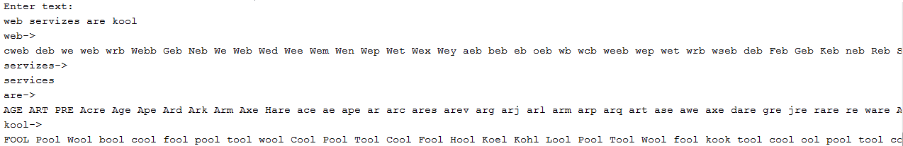

Voor de datalaag van de onderstaande GUI zullen we gebruik maken van de SOAP-webservice DictService.
Bekijk de WSDL en test enkele operaties uit via de browser. Vraagjes:
DictServiceSoap-binding?
DictServiceSoap-binding gedefinieerd?
MatchInDict?
MatchInDict?

Tip: Laat NetBeans de Web Service Client genereren.
be.tiwi.woordenboek.impl.WoordenboekDAODummy). Vervang deze dummy-implementatie door een implementatie die de data ophaalt van de bovenstaande webservice.
De GUI-applicatie bevat de volgende bestanden te ontwikkelen: Woordenboek.java, WoordenboekDAO.java, WoordenboekDAODummy, WoordenboekFrame.java en WoordenboekFrame.form.
Voeg een SOAP-webservice toe aan een (java-)webapplicatie PlantService.
Deze service maakt gebruik van de datalaag PlantenDatalaag.jar. In het zip-bestand javadoc.zip vind je de documentatie van deze datalaag. Het bestand PlantenDatalaag.jar bevat ook een tekstbestand planten.txt om een object
van het type be.tiwi.planten.impl.PlantenGeheugenDB te initialiseren. Standaard bevat dit object geen
planten.
Deze webservice heeft twee operaties ééntje om alle planten van een bepaalde kleur op te vragen en
ééntje om een plant toe te voegen. Zorg ervoor dat er maar één PlantBeheer-object is voor deze
webservice.
Een nieuwe plant heeft de volgende kenmerken. De unieke identificatie wordt automatisch toegekend door de datalaag